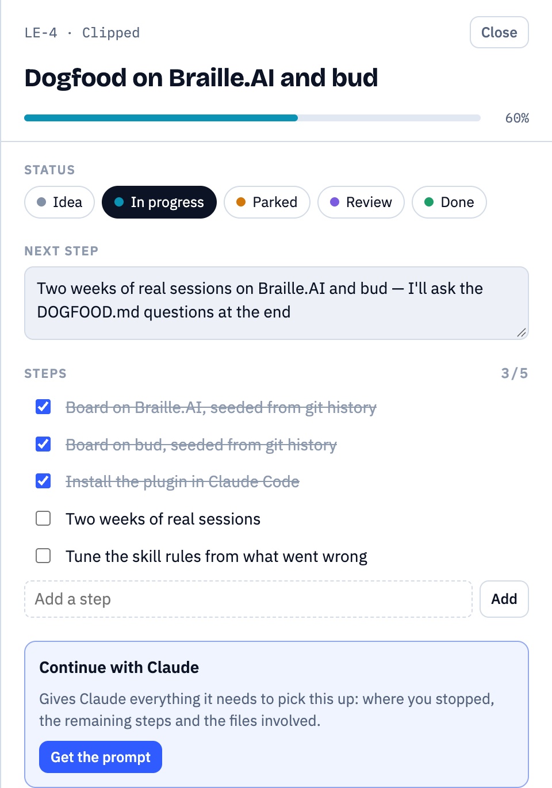
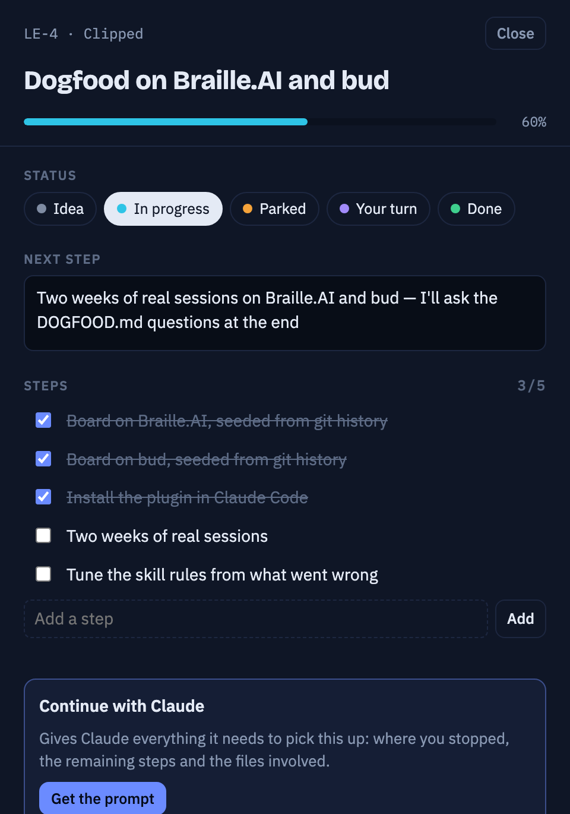
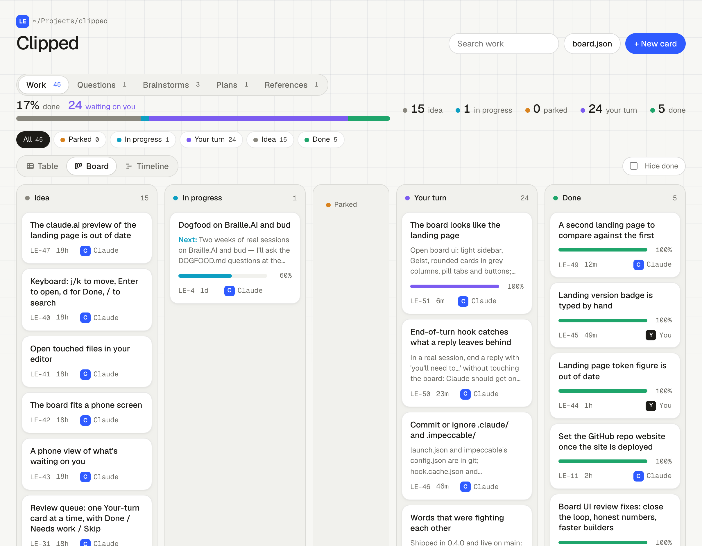
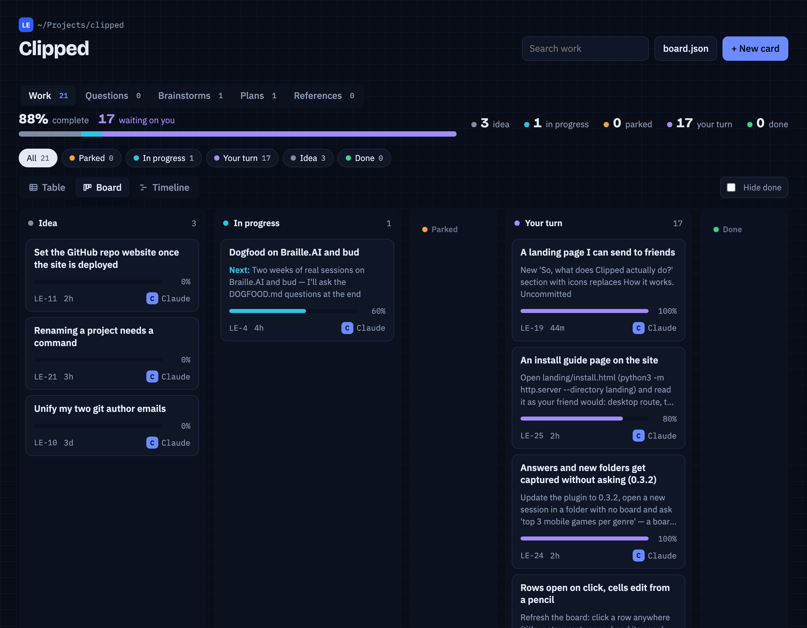

claude plugin marketplace add avivalushai/clipped && claude plugin install clipped@clipped/plugin marketplace add avivalushai/clipped/plugin install clipped@clippedInstall the Clipped plugin from avivalushai/clippedParked 2
CRM-3Import contacts from CSV1/3stopped mapping done, merge not written
CRM-7Email sync drops long threads0/2stopped Gmail pagination, no retry yet
In progress 1
CRM-8Drag a deal between pipeline stages2/4next keep the new order after a reload
question
Dedupe contacts on email or phone?brainstorm
Pipeline view: board or tableFrom chat chaos to a board that keeps itself, in 36 seconds. Sound on.
Half-done work
Picking it up weeks later is cheap.
Decisions
The reasoning stays next to what it led to.
A fresh session
Claude already knows what's open before you type.
How it works
How does it actually work?
No setup per project and nothing new to learn. You keep working the way you do.
Connects once
Two commands add a plugin to Claude Code: the rules Claude follows, and three small hooks. Nothing to set up per project.
Listens and sorts
As you work, Claude sorts what's happening into a feature, a bug, a question or a brainstorm. Small talk isn't recorded.
Lands on your board
Each project gets a board file in its own folder: what's in progress, what's parked halfway, what's waiting on you.
Every session starts with a recap
Claude reads the board before you type. So "the csv import thing" is enough.
It remembers where you stopped
Switch topics or call it a day, and the card is parked with a note on what's next.
It notices what you're doing
A feature, a bug, a question, thinking out loud. It writes it down right away.
You stay in charge
Unsure? It lands in Your turn. Nothing is Done until you say so.
Nothing lives only in the chat
Cards for work with a next step. Notes for the thinking around it.
What we catch
What counts as what
One line sits under all of it: work has a next step, notes don't. Claude applies the rest for you. This is here for the day you disagree with a call it made.
Gets written down
Anything you'd want to find again next week.
- Work that takes more than one replyA feature, a bug, a chore — named the way you'd say it.
- Things you mention in passingThey wait in Idea until someone picks them up.
- Decisions and the thinking behind themA brainstorm that landed somewhere, a plan you wrote, a link you actually used.
Left out on purpose
So the board stays worth reading.
- Chat and quick answersA question Claude answers in the same breath isn't recorded.
- One-reply fixesAt most a step on the card you're already on.
- Brainstorming that goes nowhereWhen it lands on something, Claude offers the list once, in your words — and drops it if you say no.
Cards — things with a next step
They move from Idea to Done.
- FeatureA user-visible outcome that takes more than one reply to build.
- BugSomething that used to work, or that you called broken.
- ChoreWork with nothing to look at afterwards: a cleanup, a config change, a job to run.
- QuestionSomething to find out before you decide. Claude records what it found; deciding stays yours.
Notes — the thinking around it
Linked to the cards they led to.
- BrainstormA conversation that reached a decision. It says what was decided, not everything that was said.
- PlanA spec or plan you wrote. The document keeps the reasoning; the board tracks what came of it.
- ReferenceA link you'd look up twice — only the ones that were actually used.
Idea is a status, not a type. A feature, a bug, a chore and a question all start there when you mention them in passing. It means nobody has picked it up yet.
How it decides, each time you ask for something
Is it already on the board?
Same topic, same files as an open card? Then it updates that card instead of opening another one.
Is it real work?
More than one reply, or several files? That's a new card. Ask for three things and you get three cards.
Anything smaller
Becomes a step on the card you're already on — or nothing at all.
The board
Open a card, see the whole piece of work
- Next stepWhen a card is parked, this is where you stopped.
- StepsA checklist Claude ticks off as it goes.
- Continue with ClaudeA ready prompt to paste into a new session.
- Files and activityEvery file touched, and who changed what.




This project's own board. Type board ui and it opens in your browser, updating live while Claude works.
What it is, and isn't
I'd rather you know the limits before you install it
It stays on your computer
No account, no sign-in, no server. Commit the board or .gitignore it — your call.
What it does
A card only Claude ever touched is marked as its note, so a wrong guess can't harden into fact.
What it doesn't
No commits or pushes. It writes one file: .board/board.json. One person, one machine.
This website counts page views and button clicks with Amplitude, without cookies or IP addresses. The plugin itself sends nothing.
Questions
Before you install
What if it writes down something wrong?
Correct it in the chat or on the board. The brief Claude reads at the start of a session leaves out notes it wrote that nobody checked, so its own guesses don't come back as project state. A card left unchecked for a fortnight drops out of the brief entirely.
Does it cost tokens?
A little. The session brief is a few hundred tokens — about 440 for this repo's 25 cards — because it carries titles, not every note. The end-of-turn nudge adds one short step only when the board fell behind.
Does it matter what language or stack I use?
No. The board tracks the work, not the code, so it works in any project Claude Code works in.
Can I edit the board myself?
Yes. Add, move or rewrite cards in the board page, or just tell Claude. Both write through the same code.
Should I commit .board/board.json?
Your call. It's plain JSON. Commit it to keep the history with the code, or add it to .gitignore.
Does it need an internet connection?
No. The board, the page and the commands all run on your machine.
claude plugin marketplace add avivalushai/clipped && claude plugin install clipped@clipped